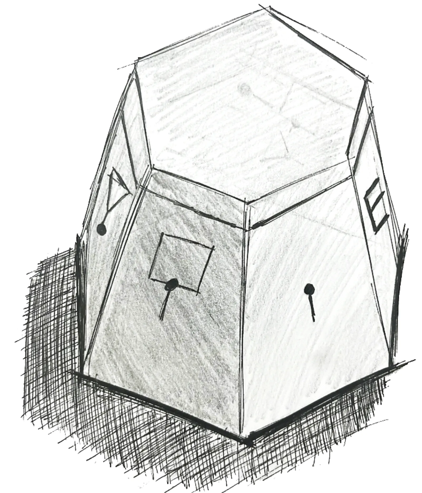
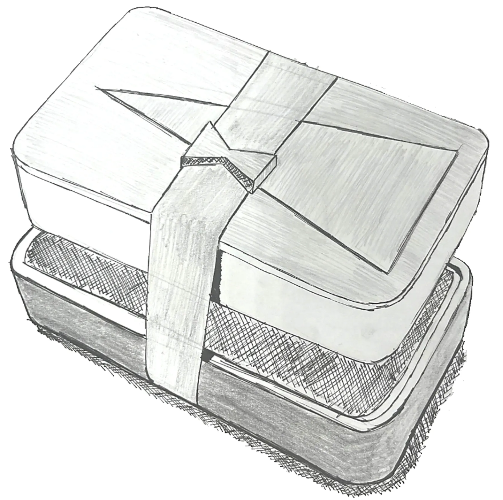
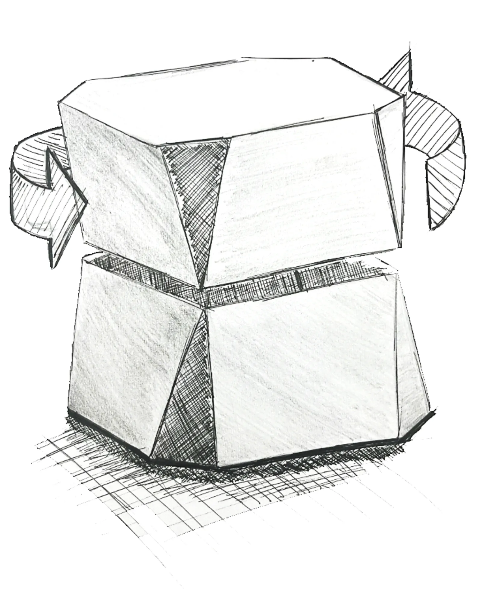
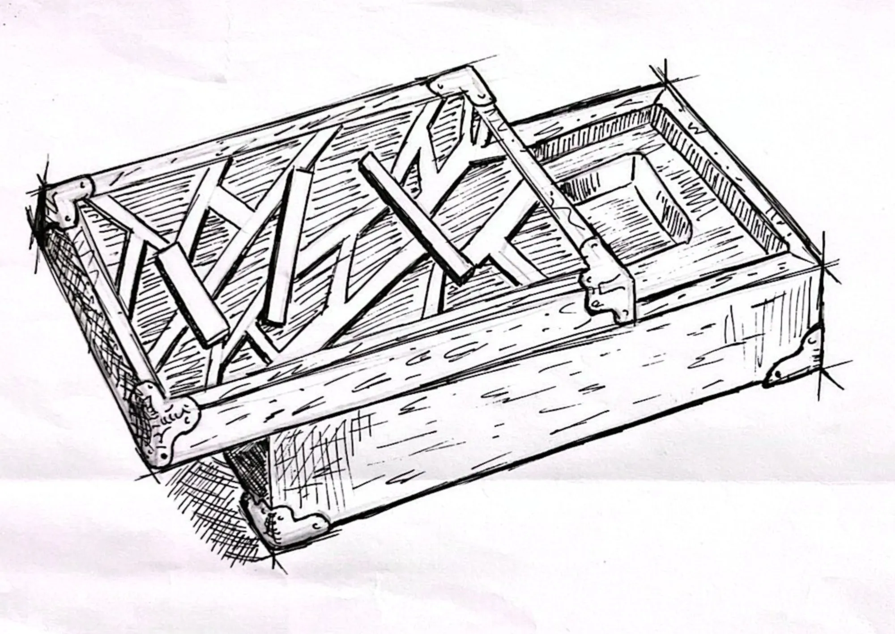

MONTGOMERY
Montgomery is a watch box for Schofield Watch Company that tells the story of the SS Richard Montgomery, a WWII cargo ship that ran aground in the Thames Estuary in 1944 with around 1,400 tons of munitions still in her holds.
The brief: design a watch box for Schofield, including the cards inside. The budget ceiling was £150, but I aimed for £110 to match the average Schofield box. It had to be manufacturable and backed by an in-depth PDS.
- Client
- Schofield Watch Company
- Module
- Design for Industry, Year 2
- Role
- Individual project
- Unit cost
- £114.45 against a £110 target


Reading the brand
Schofield was founded in 2008 by Giles Ellis and makes small-batch, high-quality British watches in Sussex. Giles describes it as a vibe-based brand: "products come after the fact". Opening a Schofield box is closer to opening a book than a retail package, and the box is the first chapter of the owner's story.
Schofield has no fixed Pantone, and if a sustainable UK-sourced material exists, the box must use it. That left the narrative as the place to focus, so every detail on the box had to tie back to the brand, the box and the story.
Three concepts, three rejections
I sketched three first concepts. Each had something worth keeping, and none of them made the cut.



The pivot
All three overlapped with things Schofield had already made, so I stopped borrowing their stories and used one of my own. I grew up on the Isle of Sheppey, where the Montgomery's three masts have stood above the water for 80 years, and the wreck's story has been largely untouched.
The box is a copy of a sealed object said to have been recovered from the wreck in 1962 by an unofficial local society. Its joinery and timber match nothing on the ship's manifest. The real mystery is the lid, which is carved with a picture of the wreck, even though the box was loaded as cargo before the ship went down.

Details you only notice once you know the story
The box mirrors WWII military transit crates: L-shaped steel corner guards and dome rivets copy the reinforcements that stopped 1940s supply trunks from splitting, with a split-line closure and ventilation holes along the base. Each detail is a reference you only understand once you know the story:
- Three raised ridges on the lid are the Montgomery's three masts, and small relief pieces near the base are the wreckage.
- Three small holes sit at each of two back corners. Three for the masts, and six in total for Schofield's six pips.
- The watch is packed as three separate pieces, case, strap and buckle, so unboxing becomes the slow ritual of assembling your own field instrument.

The cards
Every asset on the cards comes from the wreck itself. The lined backgrounds are a 3D recreation of the wreck, distorted to echo how the ship has broken up over time, which also fits the black lines on Schofield's own warranty cards. The "eye" is a top-down scan of the split hull, turned into a single dark shape, cut into 16 segments and rotated, so the owner is peering into the mystery. The text panel takes its shape from a Royal Engineers bomb disposal sleeve badge, fitting for a ship full of munitions.


Materials
Material choice decided whether this felt like a luxury watch box or a washed-up piece of military kit. I compared three options for each part:
- Timber: wenge has the right brutal grain but costs over £20 a board foot and is hard to source with reliable FSC certification. Black walnut (£9.50) felt too soft and domestic. Fumed dark oak (£6) has the open, dense grain of an ammunition chest, and iron-acetate fuming reacts with the oak's tannins to turn it charcoal right through, so it wears like field gear instead of showing scratches through a stain.
- Hardware: aged brass (about £9 a piece) drifted towards antique furniture, and blackened steel risked turning the whole box into a muddy black block. Brushed steel (about £4) contrasts with the oak and mirrors the machining of the watch inside.
- Interior: printed paper tears, and wool felt traps moisture that is bad for a leather strap. Raw cork is inert, keeps its spring for decades and can take a printed batch serial number.
Costing and PDS
The estimated unit cost is £114.45: slightly over my £110 target and well under the £150 ceiling. Labour is the biggest share, as expected for a hand-finished, small-batch UK product, which matches how Schofield already makes its boxes. The three cards cost £2.55 together, a high-impact detail for very little money.
| Component | Cost |
|---|---|
| CNC milling and joinery, UK workshop | £28.00 |
| Steel corner brackets (8) and dome rivets (48) | £34.40 |
| FSC fumed dark oak body and lid | £18.00 |
| Assembly and quality check | £12.00 |
| Milled cork tray with printed serial number | £7.70 |
| Oak relief details (masts and wreckage) | £5.50 |
| E-flute outer carton, stencil printed | £3.80 |
| Three cards, 350gsm recycled | £2.55 |
| Iron-acetate fuming | £2.50 |
| Estimated unit cost | £114.45 |
Key points from the PDS:
- The lid must lift off cleanly with a ±0.5mm fit tolerance: tight enough not to rattle, loose enough to avoid the vacuum seal that ruled out the Daymark.
- It must survive a 0.5m drop onto hardwood without cracking or the watch leaving its recess.
- No synthetic foams, plastics or petroleum-based adhesives. Timber, steel and cork separate at end of life for recycling or composting.
- An initial run of 50 units, in line with Schofield's 40 to 100-piece editions, with every part available from at least two UK suppliers.
Reflection
This project pushed me past standard product styling. The challenge was turning a tragic wreck into a premium object without it becoming a gimmick. I learned to hide the narrative in the details, like the hole pattern and the lid ridges, so the box works as a clean piece of luxury hardware while still keeping a secret for anyone who looks closer.